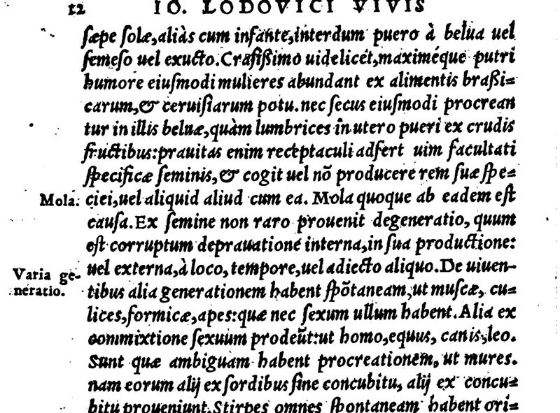

“Sunt quae ambiguam habent procreationem, ut mures” (book I, pp. 11–12)
Latin: Basel 1555, foot of p. 11 (scan) and p. 12 (scan). Margins: “Mola”, “Varia generatio”. Long s and abbreviations expanded. Highlighted: the words Lecky quotes.

… degenerat quod producitur: ut in terra, quum diversi generis stirpes edit ab iis, unde erat semen desumptum: et in monstris animantium, et in muliere, quum pro puero edit beluam non unius formae. Quod frequens est Neapoli Italiae, et in Flandria Belgica: in quarum mulierum locis gignuntur beluae multiformes, saepe solae, alias cum infante, interdum puero a belua vel semeso vel exucto. Crassissimo videlicet, maximeque putri humore eiusmodi mulieres abundant ex alimentis brassicarum, et cervisiarum potu. Nec secus eiusmodi procreantur in illis beluae, quam lumbrici in utero pueri ex crudis fructibus: pravitas enim receptaculi adfert vim facultati specificae seminis, et cogit vel non producere rem suae speciei, vel aliquid aliud cum ea. Mola quoque ab eadem est causa. Ex semine non raro provenit degeneratio, quum est corruptum depravatione interna, in sua productione: vel externa, a loco, tempore, vel adiecto aliquo.
De viventibus alia generationem habent spontaneam, ut muscae, culices, formicae, apes: quae nec sexum ullum habent. Alia ex commixtione sexuum prodeunt, ut homo, equus, canis, leo. Sunt quae ambiguam habent procreationem, ut mures. nam eorum alii ex sordibus sine concubitu, alii ex concubitu proveniunt. Stirpes omnes spontaneam habent originem: primum ex suo ipsarum semine, deinde etiam vi terrae, in quam sparsit mundi conditor semina herbarum omnium, fruticum, arborum, alia aliis locis.
… what is produced degenerates: as in the earth, when it yields plants of a different kind from those whose seed was sown; and in the monsters of animals; and in a woman, when instead of a child she brings forth a beast of no single form. This is frequent at Naples in Italy and in Flanders in the Low Countries: in the wombs of these women are begotten many-shaped beasts, often alone, sometimes with an infant, sometimes with the child half eaten or sucked dry by the beast. For such women abound in a very thick and very putrid humour from eating cabbage and drinking beer. And beasts are begotten in them in just the same way as worms in a child’s belly from unripe fruit: for the badness of the vessel does violence to the specific power of the seed, and forces it either not to produce a thing of its own species, or to produce something else along with it. The mola [a fleshy mass in the womb] has the same cause. Degeneration often comes from the seed itself, when it is corrupted in its production by an inward depravity, or by an outward one, from place, time or some addition.
Of living things, some are generated spontaneously, such as flies, gnats, ants and bees, which have no sex at all. Others come from the union of the sexes, such as man, the horse, the dog and the lion. Some have an ambiguous procreation, such as mice; for some of them come from filth without coupling, others from coupling. All plants have a spontaneous origin: first from their own seed, and then also from the power of the earth, in which the maker of the world scattered the seeds of all herbs, shrubs and trees, some in one place and some in another.
“Bees” among the sexless, spontaneously generated creatures follows an ancient opinion (bees were thought to be born from the carcass of an ox, as in Virgil’s fourth Georgic).
Backlinks
Every place in Rationalism in Europe that links to this page (generated automatically when the site is built).
- Chapter III: note 172